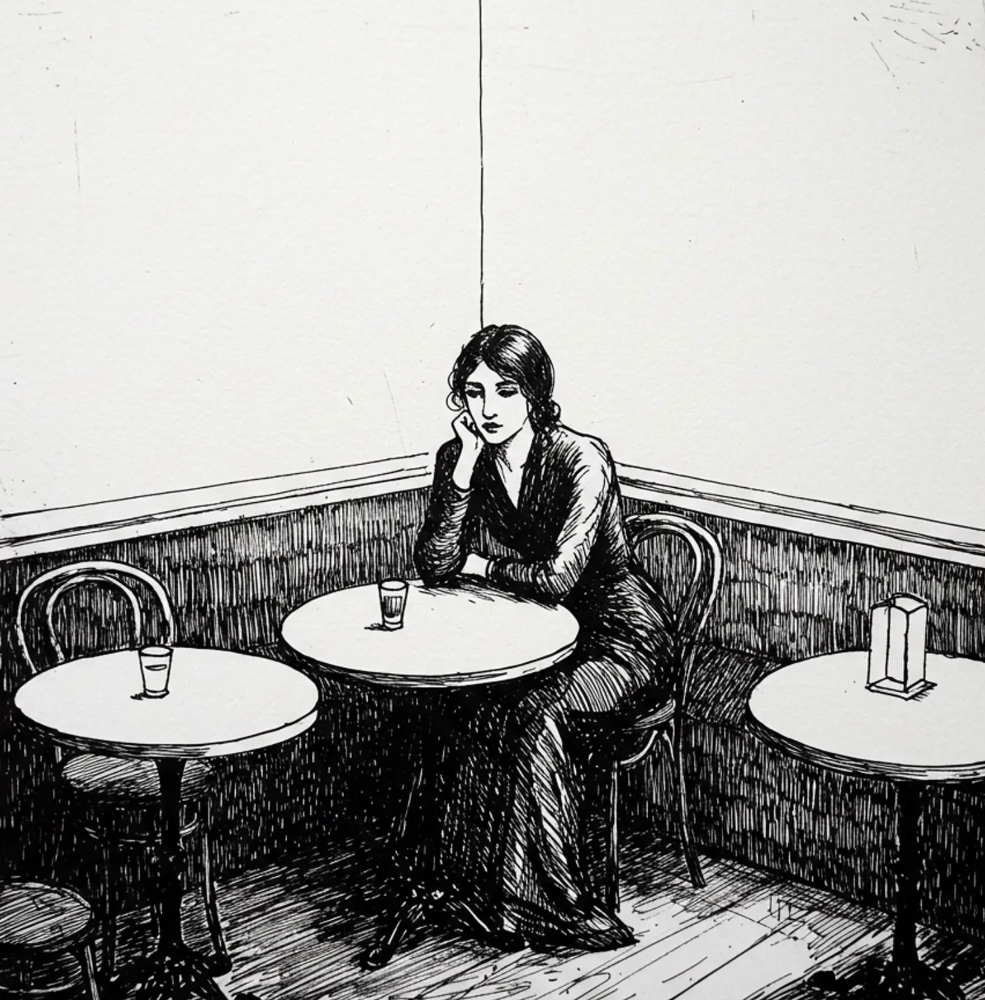

카페는 이름이 두 번, 주인이 네 번 바뀌었지만, 창가의 구석 테이블은 기억의 지리에서 변함없이 그 자리를 지키고 있었다. 비비안은 나무 표면에 남겨진 물 자국들의 별자리를 손가락 끝으로 따라 그렸고, 그녀의 에스프레소는 손도 대지 않은 페이스트리 옆에서 식어가고 있었다.
[The café had changed names twice, owners four times, but the corner table by the window remained consistent in its geography of memory. Vivienne traced her fingertip through a constellation of water rings left on the wooden surface, her espresso cooling beside her untouched pastry.]
“따뜻하게 데워 드릴까요?” 웨이트리스가 방치된 컵을 향해 고개를 끄덕이며 물었다.
[“Would you like me to warm that up for you?” asked the waitress, nodding toward the neglected cup.]
“아니요, 괜찮아요. 아직 완전히 포기한 건 아니에요,” 비비안은 익숙한 미소를 지으며 대답했다.
[“No, thank you. I haven’t quite abandoned it yet,” Vivienne replied with a practiced smile.]
가을의 서울은 그녀의 기억 속 모습 그대로였다—대로변을 따라 늘어선 배나무 사이로 비스듬히 내리쬐는 빛의 특별한 질감, 에스프레소 머신의 쉬이 소리와 함께 점철되는 대화의 교향곡. 이 특정한 테이블에서 10월 17일을 기다리며 보낸 7년의 세월은 그녀의 영혼에 홈을 파놓았는데, 마치 그녀의 몸이 마음보다 더 잘 기억하는 의자 쿠션의 미묘한 움푹 패인 자국과도 같았다. 주변의 손님들은 그녀가 음식을 주문하고 자신의 부족함을 사과할 수 있을 정도로만 배운 언어로 수다를 떨고 있었지만, 그녀는 마치 의미 있는 해변에서 돌을 모으듯 매년 새로운 문구를 자신의 어휘에 추가해왔다.
[Seoul in autumn remained faithful to her recollection—the particular quality of light slanting through pear trees along the boulevard, the symphony of conversation punctuated by the hiss of the espresso machine. Seven years of October 17ths spent waiting at this specific table had worn a groove in her soul not unlike the subtle depression in the seat cushion that her body remembered better than her mind. The patrons around her chattered in a language she’d learned just enough of to order food and apologize for her inadequacy, though she’d added a new phrase to her vocabulary each year like collecting stones from a significant shoreline.]
“그 사람이 없으면 추억은 무슨 의미가 있을까?” 그녀는 자신에게 속삭였다, 올해 배운 문구를 연습하며: “What meaning do memories have without the person?”
[“그 사람이 없으면 추억은 무슨 의미가 있을까?”
she whispered to herself, practicing the phrase she’d learned this year: “What meaning do memories have without the person?”]
그들의 만남은 정확히 4시간 23분 동안 지속되었다—비비안은 이것을 알고 있었는데, 비에 흠뻑 젖어 급히 피신처를 찾아 이 자리에 앉았을 때와 지혜가 떠나기 전 냅킨에 이메일 주소를 적어줬을 때 시계를 확인했기 때문이다.
[Their encounter had lasted precisely four hours and twenty-three minutes—Vivienne knew because she’d checked her watch when sliding into this same seat, rain-soaked and desperate for shelter, and again when Jihye had written an email address on a napkin before leaving.]
“호두 케이크를 한번 드셔보세요,” 지혜가 제안했었다, 그녀의 억양이 영어 단어들을 마치 시처럼 들리게 했다. “어쩐지 어린 시절의 맛이 나요.”
[“You should try the walnut cake,” Jihye had suggested, her accent making the English words sound like poetry. “It tastes like childhood somehow.”]
“저는 달콤한 것을 잘 먹지 않아요,” 비비안이 대답했다가, 곧바로 자신의 무심한 태도를 후회했다. “하지만 오늘은 예외로 할게요.”
[“I rarely eat sweets,” Vivienne had replied, then immediately regretted her dismissiveness. “But I’ll make an exception today.”]
“예외에서 우리는 삶의 가장 좋은 부분을 발견하죠,” 지혜가 말했고, 미소가 그녀의 얼굴을 변화시켰다. “우리가 신중하게 계획한 길에서 벗어난 예상치 못한 우회로에서요.”
[“Exceptions are where we find the best parts of life,” Jihye had said, a smile transforming her face. “The unexpected detours from our carefully planned paths.”]
그 냅킨은 이제 집에서 보존용 시트 사이에 보관되어 있었다. 파란색 잉크는 바랬지만 여전히 읽을 수 있었고, 아래쪽 3분의 1을 가로지르는 커피 얼룩은 마치 수채화 일몰처럼 퍼져 있었다. 그들은 음악과 신화, 가족의 기대에서 오는 특별한 실망감, 그리고 특정 차가 어떻게 특정 기억의 맛을 가지고 있는지에 대해 이야기했었다.
[The napkin now preserved between archival sheets at home, its blue ink faded but legible despite the coffee stain blooming across the bottom third like a watercolor sunset. They’d spoken of music and mythology, of the particular disappointments of family expectations, of how certain teas tasted like specific memories.]
“어머니는 내가 콘서트 피아니스트가 되길 원하셨어,” 지혜가 털어놓았다, 손가락으로 테이블 위에서 조용히 멜로디를 두드리며. “손가락 끝에서 피가 날 때까지 연습했었지.”
[“My mother wanted me to be a concert pianist,” Jihye had confided, fingers lightly drumming a silent melody on the tabletop. “I practiced until my fingertips bled.”]
“그럼 지금은?”
[“And now?”]
“지금은 비디오 게임 음악을 작곡해. 어머니는 그걸 내 훈련에 대한 배신이라고 생각하시지만, 네 가능성을 제한하는 사람들을 실망시키는 데에는 자유가 있어.”
[“Now I compose music for video games. My mother considers it a betrayal of my training, but there’s freedom in disappointing people who limit your horizons.”]
지혜의 웃음소리는 바람에 흔들리는 작은 종소리 같았고, 그녀가 그리워하는 어린 시절의 사찰을 설명할 때 그녀의 손은 믿을 수 없을 정도로 우아하게 움직였다. 그녀의 눈은 비비안의 얼굴을 비추었는데, 단순히 보여지는 것이 아니라 해독되는 느낌이 들게 했다. 그날 밤 나중에 시도해 보았을 때 이메일 주소는 존재하지 않는 것으로 판명되었다—아마도 의도적으로 잘못 적었거나, 교감의 흥분으로 잘못 옮겨 적었거나, 어쩌면 비비안이 어떻게든 실패한 시험이었을지도 모른다.
[Jihye’s laugh had sounded like small bells caught in wind, her hands moving with impossible grace when describing the childhood temple she missed, her eyes reflecting Vivienne’s face in such a way that made her feel deciphered rather than merely seen. The email address had proven non-existent when tried later that night—perhaps deliberately incorrect, perhaps mistranscribed through the excitement of connection, perhaps a test Vivienne had somehow failed.]
“내일도 서울에 계실 거예요?” 빗방울이 다시 창문을 두드리기 시작하자 비비안이 물었다.
[“Will you still be in Seoul tomorrow?” Vivienne had asked as raindrops began their percussion against the windows again.]
“내일은 의무에 속해 있어요,” 지혜가 암시적으로 대답했다. “하지만 오늘, 이 테이블, 이 대화—이건 시간 밖에 존재하는 것 같지 않나요?”
[“Tomorrow belongs to obligations,” Jihye had answered cryptically. “But today, this table, this conversation—it exists outside of time, don’t you think?”]
이제, 오래된 창틀을 통해 스며드는 10월의 추위에 스카프를 고쳐 매며, 비비안은 들어오는 모든 손님을 살피는 연례 의식을 수행했다. 우연의 수학적 불가능성을 알면서도 그녀의 연례 순례를 지탱하는 비합리적인 희망을 품고 있었다. 그 사이 그녀는 성공적인 삶을 일구었다—승진, 인간관계, 심지어 짧은 행복까지—그러나 이 테이블은 대륙을 가로질러 중력처럼 그녀를 끌어당겼다.
[Now, adjusting her scarf against the October chill that seeped through ancient window frames, Vivienne performed her yearly ritual of scanning each entering customer, knowing the mathematical improbability of coincidence while nurturing the irrational hope that sustained her annual pilgrimage. She’d built a successful life in the intervening years—promotions, relationships, even brief happiness—yet this table exerted its gravitational pull across continents.]
젊은 웨이트리스가 신선한 커피를 들고 다가왔다. 비비안이 자신의 존재 이유를 한 번도 설명한 적이 없음에도 그녀의 동정심은 분명했다.
“올해는 될지도 몰라요,” 웨이트리스가 조심스러운 영어로 말했다. 매년 10월 17일마다 주고받는 똑같은 말이었고, 비비안의 개인적인 헌신이 카페 자체의 신화가 되었음을 보여주었다.
“매년 그렇게 말하죠,” 비비안이 컵을 받으며 대답했다.
[A young waitress approached with fresh coffee, her sympathy evident though Vivienne had never explained her presence.
“Maybe this year,” the waitress offered in careful English, the same words exchanged every October 17th, revealing that Vivienne’s private devotion had become part of the café’s own mythology.
“You say that every year,” Vivienne replied, accepting the cup.]
“그리고 매년, 당신은 돌아오죠,” 웨이트리스가 관찰했다. “누군가는 그런 충실함의 가치가 있나 봐요.”
[“And every year, you come back,” the waitress observed. “Someone must be worth such faithfulness.”]
“누군가가 아니에요,” 비비안이 부드럽게 정정했다. “가능성이죠. 있었을지도 모르는 평행한 삶의 유령이에요.”
[“Not someone,” Vivienne corrected gently. “A possibility. The ghost of a parallel life that might have been.”]
“여전히 아름다워요,” 웨이트리스가 작게 고개를 숙이며 말한 후 물러났다.
[“Still beautiful,” the waitress said with a small bow before retreating.]
비비안은 미소를 지었다. 폐점 시간까지 자신의 기다림을 유지할 암묵적 허락을 받아들이며, 어떤 형태의 그리움은 그 자체로 우리가 거주하기로 선택한 집이라는 것, 때로는 부재가 존재보다 더 신성한 공간을 만들어낸다는 것을 이해했다.
“가능성을 위하여,” 그녀는 맞은편 빈 의자를 향해 컵을 들어 올리며 속삭였다. “그리고 우리를 괴롭히도록 우리가 선택한 유령들을 위하여.”
[Vivienne smiled, accepting the tacit permission to maintain her vigil until closing time, understanding that some forms of longing are themselves a home we choose to inhabit, that absence sometimes carves spaces more sacred than presence ever could.
“To possibilities,” she whispered, raising her cup to the empty chair across from her. “And to the ghosts we choose to haunt us.”]